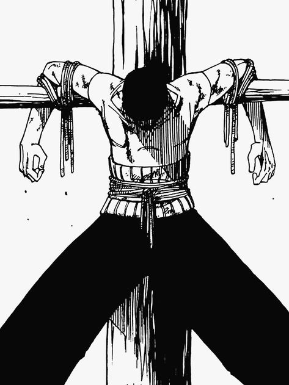

Моя история
Зоро родился 21 год назад в Ист-Блу в семье Тэры и Ророноа Араши, потомка семьи Симоцуки.К тому времени, когда ему исполнилось 8 лет, его отец Араши уже был убит в битве с пиратами, угрожавшими деревне, а его мать Тера умерла от болезни, оставив Зоро сиротой в додзе в деревне Симоцуки, где он обучался фехтованию
Навыки
| Трехмечевой стиль | Безмечевой стиль |
|---|---|
| 36 фунтовая пушка | драконий торнадо |
| Львиная песня | Мантра |
Друзья
Луффи, Нами, Уссоп